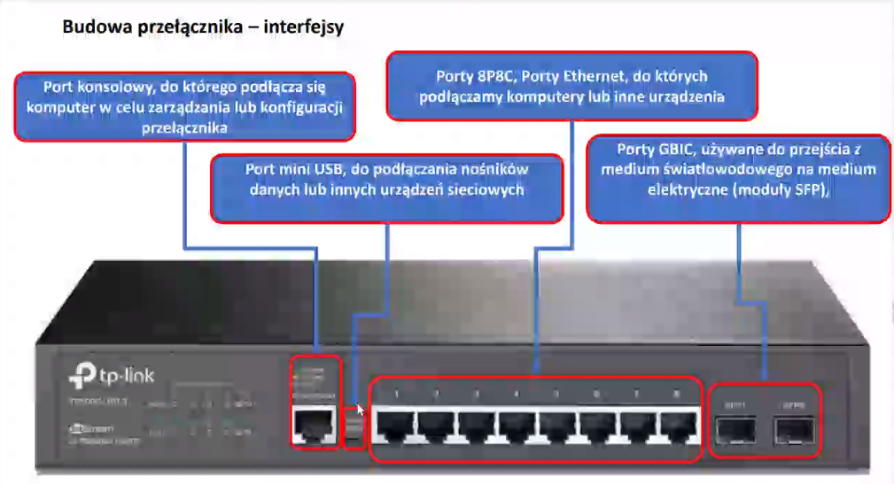
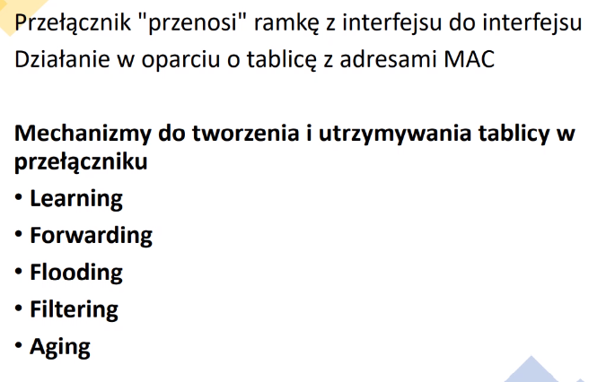

Urządzenia do Pomiaru Sieci Komputerowej
Urządzenia do Pomiaru Sieci Komputerowej - Prezentacja CJ-------------------------------------------------------------------------------------------------------------------------------------------------------------------------------------------------------------------------------------------------------------------
Klasyfikacja sieci komputerowej
Sieć osobista PAN [Personal Area Networks] - jest siecią, która łączy urządzenia przypisane do danej osoby takie jak: mysz, klawiatura, drukarka, smartfon i tablet. Wszystkie urządzenia są dedykowane dla jednego hosta i najczęściej są połączone technologią Bluetooth.-------------------------------------------------------------------------------------------------------------------------------------------------------------------------------------------------------------------------------------------------------------------
Sieć LAN [Local Area Network] - może być tak mała, jak sieć domowa lub sieć w małym biurze.
To sieć komputerowa, która łączy komputery w ograniczonym obszarze, takim jak miejsce zamieszkania, szkoła, laboratorium, kampus uniwersytecki lub budynek biurowy. -------------------------------------------------------------------------------------------------------------------------------------------------------------------------------------------------------------------------------------------------------------------
Sieć metropolitalna MAN
[Metropolian Area Network - MAN]
jest siecią, która rozciągnięta jest na obszarze dużego kampusu lub miasta. Taka sieć stanowi szkielet łączący różne budynki technologią bezprzewodową lub optyczną.
Łącza komunikacyjne i wyposażenie sieci jest z reguły własnością konsorcjum użytkowników albo dostawcy usług, który oferuje swoje usługi użytkownikom. Sieci MAN mogą stanowić sieci
o dużej rozległości.
-------------------------------------------------------------------------------------------------------------------------------------------------------------------------------------------------------------------------------------------------------------------
Sieć rozległa WAN
[Wide Area Network] to sieć rozległa, o dużym zasięgu, przekraczającym obszar jednego miasta, które zasięgiem swoim obejmują różne obszary geograficzne.
Technologia WAN jest również stosowana do łączenia sieci korporacyjnych i badawczych.
-------------------------------------------------------------------------------------------------------------------------------------------------------------------------------------------------------------------------------------------------------------------
Intranet - to sieć komputerowa przeznaczona dla wąskiej grupy użytkowników np. w firmach lub organizacjach.
Świadczy usługi znane w internecie, takie jak poczta elektroniczna, strony WWW. Sieć intranet jest chroniona przed nie autoryzowanym dostępem z zewnątrz.
-------------------------------------------------------------------------------------------------------------------------------------------------------------------------------------------------------------------------------------------------------------------
Ekstranet - ma taką samą funkcjonalność jak Intranet, ale udostępniony szerszej grupie użytkowników np. dostawcom, klientom firmy.
-------------------------------------------------------------------------------------------------------------------------------------------------------------------------------------------------------------------------------------------------------------------
Sieć typu P2P [peer-to-peer]
to rozproszona architektura aplikacji, która dzieli zadania lub obciążenia między równorzędne strony, nie ma dedykowanych serwerów ani hierarchii między komputerami.
Każde urządzenie ma takie same możliwości i zadania. Poszczególni użytkownicy są odpowiedzialni za swoje zasoby i mogą decydować, które dane i urządzenia dzielić lub instalować.
Ponieważ to użytkownicy są odpowiedzialni za zasoby na swoich komputerach, sieć nie ma centralnego punktu kontroli czy administracji.
-------------------------------------------------------------------------------------------------------------------------------------------------------------------------------------------------------------------------------------------------------------------
Sieć typu klient - server
to rozproszona struktura aplikacji, która dzieli zadania lub obciążenia pomiędzy dostawców zasobu lub usług, zwanych serwerami i odbiorców usług zwanych klientami.
Serwer uruchamia co najmniej jeden program, który współużytkuje swoje zasoby z klientami. Klient nie udostępnia żadnego ze swoich zasobów, ale żąda treści i usług od serwera.
-------------------------------------------------------------------------------------------------------------------------------------------------------------------------------------------------------------------------------------------------------------------
Topologie Sieci
Topologia sieci to zbiór reguł fizycznego łączenia i reguł komunikacji poprzez dany nośnik sieci. W zależności od wybranej topologii sieci istnieją konkretne specyfikacje dotyczącekabli, złączy i standardów komunikacji urządzeń ze sobą.
-------------------------------------------------------------------------------------------------------------------------------------------------------------------------------------------------------------------------------------------------------------------
Topologie sieci dzielimy na fizyczną, która określa, w jaki sposób urządzenia są ze sobą połączone oraz logiczną opisującą, w jaki sposób przesyłane są dane pomiędzy urządzeniami.
Każda, nawet najmniejsza sieć komputerowa, posiada topologię fizyczną oraz logiczną, które to definiują sposób połączenia urządzeń oraz to, w jaki sposób przesyłane są dane.
---
Topologie fizyczne sieci:
- Topologia magistrali
- Topologia gwiazdy, rozszerzonej gwiazdy
- Topologia pierścienia, podwójnego pierścienia
- Topologia siatki
- Topologia drzewa
- Topologia mieszana
---
Topologia magistrali - wszystkie elementy sieci podłączone do jednej magistrali, węzły współdzielą jedno medium kablowe.
-------------------------------------------------------------------------------------------------------------------------------------------------------------------------------------------------------------------------------------------------------------------
Topologia gwiazdy - polega na podłączeniu wszystkich elementów sieci do jednego urządzenia centralnego.
[Najlepsza w sieciach LAN]
-------------------------------------------------------------------------------------------------------------------------------------------------------------------------------------------------------------------------------------------------------------------
Topologia rozszerzonej gwiazdy - oparta na technologii gwiazdy, charakteryzuje się że do urządzenia centralnego przyłączane są urządzenia końcowego, które są urządzeniami
centralnymi dla swojej sieci. Ten rodzaj sieci pozwala na wzmocnienie sygnału między segmentami sieci.
-------------------------------------------------------------------------------------------------------------------------------------------------------------------------------------------------------------------------------------------------------------------
Topologia pierścienia - polega na tym że wszystkie elementy sieci połączone są ze sobą za pomocą jednego medium w układzie zamkniętym, przypominającym pierścień.
-------------------------------------------------------------------------------------------------------------------------------------------------------------------------------------------------------------------------------------------------------------------
Modyfikacje technologii pierścienia jest Topologia podwójnego pierścienia. Pierścienie łączą elementy sieci ale nie łączą się ze sobą.
-------------------------------------------------------------------------------------------------------------------------------------------------------------------------------------------------------------------------------------------------------------------
Topologia siatki - polega na fizycznym połączeniu każdego węzła z wszystkimi pozostałymi węzłami w danej sieci
Dostępne są dwa rodzaje topologii siatki:
- Pełnej Siatki
- Częściowej Siatki
Pełna Siatka - każdy węzeł ma jedno fizyczne połączenie z każdym innym węzłem w sieci
Częściowej Siatki - każdy węzeł ma różną liczbę fizycznych połączeń z innymi węzłami w sieci
-------------------------------------------------------------------------------------------------------------------------------------------------------------------------------------------------------------------------------------------------------------------
Topologia mieszana - łączy dwie lub więcej różnych technologii.
rozgłaszania - polega na tym, że host wysyła dane do wszystkich hostów połączonych do medium.
Topologia przekazywania żetonu - polega na kontrolowaniu dostępu do sieci przez przekazywanie elektronicznego żetonu/tokenu.
-------------------------------------------------------------------------------------------------------------------------------------------------------------------------------------------------------------------------------------------------------------------
Pomiary okablowania strukturalnego
Tłumienie sygnałuTłumienie sygnału zależy od:
*Częstotliwości Sygnału (im większa tym większe tłumienie)
*Długości Kabla
*Wieku Kabla
*Wilgotność Kabla
*Wytrzymałość Kabla na rozciąganie i zginanie kabla
Tłumienie - jednostka [dB]
Kat 5e- 24
Kat 6- 21,7
Kat 6a- 21,7
Kat 7- 20,8
-------------------------------------------------------------------------------------------------------------------------------------------------------------------------------------------------------------------------------------------------------------------
Opóźnienie propagacji Sygnału - to czas potrzebny na przebycie sygnału między nadawcą a odbiorcą.
Opóźnienie - jednostka [ns]
Kat 5e- 548
Kat 6- 548
Kat 6a- 548
Kat 7- 507
-------------------------------------------------------------------------------------------------------------------------------------------------------------------------------------------------------------------------------------------------------------------
Przesłuch - zjawisko niepożądanych efektów w obwodzie lub kanale transmisyjnym, wywołanych sygnałem transmitowanym przez inny obwód lub kanał danego systemu.
Jednostka [dB]
Rodzaje:
- Zbliżeniowy
- Zdalny
- Skumulowany
- ELFEXT
- PSELFEXT
- ACR
-------------------------------------------------------------------------------------------------------------------------------------------------------------------------------------------------------------------------------------------------------------------
Pojęcie które były, ale Ozonek Rushuje
- Mapa Połączeń
- Straty Odbiciowe
- Tłumienie Światłowodu
Dyspersja - sygnał niesiony przez fale elektromagnetyczną rozchodzący się w ośrodku ulega degradacji.
Rodzaje Dyspersji:
- modowy
- materiałowy
- falowodowy
- polaryzacyjny PMD
- chromatyczny zawierający w sobie dyspersję materiałową oraz falowodową
-------------------------------------------------------------------------------------------------------------------------------------------------------------------------------------------------------------------------------------------------------------------
Rodzaje testów i pomiarow aktywnej sieci komputerowej
Programy diagnostyczne* Alp
* Hostname [sprawdza nazwe komputera sieci]
* Ipconfig
* Nbtstat
* Netstat [sprawdza aktywne połączenia]
* Ping [sprawdza połączenie między ip]
* Tracert [pokazuję ile "skoków" jest wykonywanych do momentu dołączenia na ip docelowe]
-------------------------------------------------------------------------------------------------------------------------------------------------------------------------------------------------------------------------------------------------------------------
Programy komunikacyjne
* Ftp
* Teinet
* Tftp
-------------------------------------------------------------------------------------------------------------------------------------------------------------------------------------------------------------------------------------------------------------------
Oprogramowanie serwerowe
* Tcp/ip Printing service
* Internet information services
-------------------------------------------------------------------------------------------------------------------------------------------------------------------------------------------------------------------------------------------------------------------
Straty pakietow OWL
Poziom strat pakietow IPLR
Dostępność uslugi
-------------------------------------------------------------------------------------------------------------------------------------------------------------------------------------------------------------------------------------------------------------------
Dekapsulacja i Enkapsulacja Danych + model ISO/OSI by Iwo
Dekapsulacja Danych - polega na zdejmowaniu dodatkowej informacji w kolejnych warstwach modelu ISO/OSI.Dane, segmenty, pakiety, ramki, bity W poszczególnych warstwach w modelu ISO/OSI, przechodzące
dane noszą nazwę jednostek danych protokołu PDU.
Enkapsulacja Danych - W modelu warstwowym komunikacji polega na przekazywaniu danych pomiędzy warstwami.
Proces „przechodzenia” danych z warstwy wyższej do niższej nazwany jest enkapsulacją.
-------------------------------------------------------------------------------------------------------------------------------------------------------------------------------------------------------------------------------------------------------------------
Warstwy Górne:
- Warstwa aplikacji
- Warstwa prezentacji
- Warstwa sesji
Ich zadaniem:
- współpraca z oprogramowanie realizującym zadania zlecane przez użytkownika
- tworzą one interfejs, który pozwala na komunikację z warstwami niższymi
- ta sama warstwa realizuje dokładnie odwrotne zadanie w zależności od kierunku przepływu informacji
-------------------------------------------------------------------------------------------------------------------------------------------------------------------------------------------------------------------------------------------------------------------
Warstwy Dolne:
- Warstwa transportowa
- Warstwa sieciowa
- Warstwa łącza danych
- Warstwa fizyczna
Ich zadaniem:
- odnajdywanie odpowiedniej drogi do celu
- dzielą również dane na odpowiednie dla urządzeń pakiety
- zapewniają weryfikację bezbłędności przesyłanych informacji
-------------------------------------------------------------------------------------------------------------------------------------------------------------------------------------------------------------------------------------------------------------------
Warstwa aplikacji - warstwa ta, jak i użytkownik wchodzą w interakcje bezpośrednio z aplikacją.
Warstwa prezentacji -
[zadania tej warstwy to]
[Rozpoznanie typu danych]
[Kodowanie i konwersja danych]
[Odpowiada za reprezentację danych i obsługe różnych formatów]
Warstwa sesji - zapewnia aplikacjom komunikowanie pomiędzy różnymi systemami.
Warstwa transportowa - zapewnia połączenie między aplikacjami w różnych
systemach komputerowych, dba o kontrolę poprawności przesyłanych danych.
Warstwa sieciowa - zapewnia przesyłanie sekwencji danych o zmiennnej
długości między hostami połączonymi w "różnych sieciach".
[posiada trzy funkcje]
[określa, jak urządzenia przesyłają pakiety]
[wyznacza trasy, w celu poznania najlepszej]
[Adresowanie logiczne, ustala jaki adres może mieć każde urządzenie]
Warstwa łącza danych - zapewnia transfer danych między dwoma bezpośrednio
połączonymi węzłami.
[zawiera]
[Nagłówek - zawiera informacje sterujące]
[Dane - zawiera nagłówek IP, warstwy transportowej oraz dane aplikacji]
[Stopkę - w niej znajdują siędane kontrolne do wykrywania błędów]
[2 podstarstwy]
[MAC - odpowiedzialna za kontrolowanie sposobu, w jaki urządzenia w sieci
zyskują dostęp do medium.]
[LLC - jest odpowiedzialna za indentyfikację protokołów warstwy sieci oraz kontrolę
sprawdzania błędów ramek.]
Warstwa fizyczna - jest odpowiedzialna za transmisję danych między
urządzeniem a fizycznym medium transmisyjnym.
-------------------------------------------------------------------------------------------------------------------------------------------------------------------------------------------------------------------------------------------------------------------
Dekapsulacja i Enkapsulacja Danych + model ISO/OSI by CJ
MODEL OSI/ISO-------------------------------------------------------------------------------------------------------------------------------------------------------------------------------------------------------------------------------------------------------------------
WSTĘP:
notatka zrobiona w celu sciągania, nauki do kartkówki lub do innych jeszce ieznanych celów.
zagadnienia na kartkówke raczej wszystkie śą w innym wypadku prosze zgłościć na gwarancje*
(równeż w wypadku innych błedów). tekstu jet dużo jednak zazwyczaj albo się powtarza lub
ma podobne znaczenie.
PROSZE ZAPOZNAJ SIĘ Z ZAGADNIENIAMI NA KARTKÓWKE
*może lepiej nie
-------------------------------------------------------------------------------------------------------------------------------------------------------------------------------------------------------------------------------------------------------------------
1 APLIKACJI
2 PREZENTACJI
3 SESJI
4 TRANSPORTU
5 SIECI
6 ŁĄCZA DANYCH
7 FIZYCZNA
-------------------------------------------------------------------------------------------------------------------------------------------------------------------------------------------------------------------------------------------------------------------
definicja: Model wzorcowy ISO OSI (angielskie Open System Interconnection Reference Model),
jest kompleksowy standard komunikacji sieciowej (ISO 7498). Proces komunikacji wg tego
modelu został podzielony na 7 etapów, zwanych warstwami, ze względu na sposób
przechodzenia informacji pomiędzy nimi. Według modelu OSI każdy protokół komunikuje się ze
swoim odpowiednikiem, będącym implementacją tego samego protokołu w równorzędnej warstwie
komunikacyjnej systemu odległego. Dane przekazywane są od wierzchołka stosu, poprzez
kolejne warstwy, aż do warstwy fizycznej, która przesyła je poprzez sieć do odległego hosta.
-------------------------------------------------------------------------------------------------------------------------------------------------------------------------------------------------------------------------------------------------------------------
1 APLIKACJI: umożliwai użytkownikowi kożystanie z usłóg sieciowych
(WWW, e-poczta, komunikatory) taki ala GUI. Definiuje interfejsy sieciowe
i medium transmisji. Określa m.in. sposób połączenia mechanicznego, elektrycznego,
standard fizycznej transmisji danych. W skład jej obiektów wchodzą
min.: przewody, karty sieciowe, modemy, wzmacniacze, koncentratory.
2 PREZENTACJI: przekazuje do warstwy aplikacji informacje o zastosowanym
formacie danych, np. informuje jakie typy plików będą przesyłane, odpowiada
ona również za odpowiednie zakodowanie danych na urządzeniu źródłowym i ich
dekodowanie na urządzeniu docelowym. Definiuje mechanizmy kontroli błędów w
przesyłanych ramkach lub pakietach - CRC (Cyclic Redundancy Check).
3 SESJI: zarządzająca sesjami użytkowników korzystających np. ze stron WWW czy
komunikacji video. Zapewnia metody ustanawiania, utrzymywania i rozłączania połączenia
sieciowego. Ponadto jest odpowiedzialna za trasowanie pakietów w sieci, czyli
wyznaczenie optymalnej trasy dla połączenia. W skład jej obiektów wchodzą min.: rutery.
4 TRANSPORTU: głównym zadaniem jest sprawna obsługa komunikacji pomiędzy urządzeniami.
Dba o kolejność pakietów otrzymywanych przez odbiorcę.
W warstwie tej dane dzielone są na mniejsze części, następnie opatrywane są dodatkowymi
informacjami pozwalającymi zarówno przydzielić je do właściwej aplikacji na urządzeniu
docelowym, jak i pozwalającymi złożyć je na urządzeniu docelowym w odpowiedniej kolejności.
5 SIECI: głównym zadaniem jest odnalezienie najkrótszej i najszybszej drogi do urządzenia
docelowego przez sieć rozległą, podobnie jak robią to samochodowe GPS’y, ale także
adresowanie danych z wykorzystaniem adresów logicznych (adresów IP). Zapewnia aplikacjom
na odległych komputerach realizację wymiany danych pomiędzy nimi.
6 ŁĄCZA DANYCH: głównym zadaniem jest kontrola dostępu do medium transmisyjnego, a także adresowanie danych, tym razem jednak w celu przesyłania ich pomiędzy hostami w sieci LAN. Zapewnia tłumaczenie danych, definiowanie ich formatu oraz odpowiednią składnię.
7 FIZYCZNA: koduje dane do postaci czystych bitów (zer i jedynek) i przesyła je poprzez medium transmisyjne do odpowiednich urządzeń.
-------------------------------------------------------------------------------------------------------------------------------------------------------------------------------------------------------------------------------------------------------------------
ENKAPSULACJIA & DEKAPSULACJA
Aby dane mogły trafić do odpowiedniego hosta i
aplikacji oraz w miarę możliwości w niezmienionej postaci opatrywane są odpowiednimi
informacjami, nazwijmy je sterującymi. Informacje to dodawane są w trzech warstwach, np. w
warstwie transportu dodawany jest numer portu aplikacji, w warstwie internetowej czy też
sieciowej adres IP hosta docelowego, a w warstwie dostępu do sieci lub łącza danych adres
MAC. Cały proces przechodzenia danych przez warstwy w dół stosu, ich podział na mniejsze
fragmenty oraz dodawanie informacji sterujących, tych dodatkowych danych nazywany jest
enkapsulacją. Istnieje również proces odwrotny, pozwalający na usuwanie tych dodatkowych
informacji na urządzeniu docelowym i nazywany jest procesem dekapsulacji.
W SKRUCIE
ENKAPSULACJIA: Proces przechodzenia w duł warstw oraz dzielenie ich na fragmenty i
dodawanie informacji.
DEKAPSULACJA: odwrotna ENKAPSULACJIA.
-------------------------------------------------------------------------------------------------------------------------------------------------------------------------------------------------------------------------------------------------------------------
Protokoły Komunikacyjne
Protokół UDP - jest w sieciach komputerowych jednym z głownychelementów pakietu protokołów internetowych. Dzięki UDP aplikacje komputerowe
mogą wysyłać wiadomości do innych hostów w sieci protokołu internetowego IP.
Protokół TCP - TCP zapewnia niezawodne, uporządkowane i sprawdzone pod kątem błędów dostarczanie
strumienia bajtów między aplikacjami działającymi na hostach komunikujących się
przez sieć IP.
Protokół ICMP - Jest używany przez urządzenia sieciowe do wysyłania komunikatów o błędach i informacji
operacyjnych sygnalizujących powodzenie lub niepowdzenie podczas komunikacji z
innym adresem IP.
Protokół ARP - to protokół komunikacyjny wykorzystywany do wykrywania
adresu warstwy łącza, takiego jak adres MAC.
Protokół IP - ma za zadanie dostarczać dane z hosta źródłowego do hosta
docelowego wyłącznie na podstawie adresów IP.
Protokół PPP - protokół komunikacyjny używany przy bezpośrednich połączeniach
pomiędzy dwoma węzłami sieci. Służy również do prostego zestawiania tuneli.
Gniazdo - to kombinacja adresu IP i numeru portu.
Protokół DNS - to hierarchiczny i zdecentralizowany system nazewnictwa dla
komputerów, usług oraz innych zasobów podłączonych do internetu.
Protokół DHCP - to protokół zarządzania siecią używany w sieciach, w których
serwer DHCP dynamicznie przpisuje adres IP i inne parametry konfiguracji sieci każdemu działającemu
w niej urządzeniu.
Protokoły HTTP i HTTPS - to podstawa komunikacji w sieci WWW, w której dokumenty
zawierają hiperłącza do innych zasobów.
Protokoły FTP i SFTP - to standardowy protokół sieciowy używany do przesyłania
plików między klientem a serwerem.
Protokół SSH - to protokół sieciowy do bezpiecznego zarządzania usługami
sieciowymi w niezabezpieczonej sieci.
Protokół SMTP - to protokół komunikacyjny służący do przesyłania poczty elektronicznej.
Protokół IPsec - to bezpieczny pakiet protokołów sieciowych, któy uwierzytelnia
i szyfruje pakiety danych w celu zapewnienia bezpiecznej szyfrowanej komunikacji
między dwoma komputerami za pomocą sieci.
-------------------------------------------------------------------------------------------------------------------------------------------------------------------------------------------------------------------------------------------------------------------
Przełącznik Sieciowy
Przełącznik sieciowy - urządzenie łączące segmenty sieci komputerowej.Zadaniem switch'a jest przekazywanie ramek PDU z interfejsu wejściowego
na interfejs wyjściowy z wykorzystaniem adresów MAC.
Jego zadaniem jest przekazywanie ramki między segmentami sieci
z doborem portu przełącznika, na który jest przekazywana.
-------------------------------------------------------------------------------------------------------------------------------------------------------------------------------------------------------------------------------------------------------------------
Podział ze względu na budowę:
- przełącznik biurkowy
- przełącznik jednolity
Podział ze względu na obszar działania:
- pracujące w sieciach LAN
- pracujące w sieciach WAN
- pracujące w sieciach ATM
Podział ze względu obszaru pracy w modelu warstwowym
ISO/OSI:
- przełączniki warstwy 2.
- przełączniki warstwy 3.
- przelączniki wielowarstwowe
Podział ze względu na stałą konfigurację:
- przełącznik niezarządzalny
- przełącznik zarządzalny
-------------------------------------------------------------------------------------------------------------------------------------------------------------------------------------------------------------------------------------------------------------------
Metody pracy przełącznika sieciowego:
cut through - przekazywanie odbywa się z najmniejszem opóźnieniem, ramki są
przekazywane bez sprawdzania ich poprawności.
store and forward - opóźnienie jest największe, ponieważ zanim ramka zostaje
przesłana, jest sprawdzana jej suma kontrolna.
fragment free - metoda pośrednia, sprawdzana jest poprawność tylko nagłówka ramki.
przełączanie adaptacyjne - tryb jest dobierany na podstawie obciążenia.
-------------------------------------------------------------------------------------------------------------------------------------------------------------------------------------------------------------------------------------------------------------------
Okablowanie Strukturalne
Okablowanie strukturalne - system uniwersalnego okablowania telekomunikacyjnego przewidziany do szerokiej gamy zastosowań. Umożliwia on tworzenie sieci komputerowych lubdołączanie telefonów i innych urządzeń pracujących w sieci.
Na okablowanie strukturalne składają się:
Okablowanie Poziome -łączy punkty abonenckie, czyli gniazdka sieciowe znajdujące się na stanowisku biurowym z punktem dystrybucyjnym na danym piętrze
Okablowanie Pionowe - łączy ze sobą poszczególne kondygnacje w budynku,okablowanie pionowe zbiera cały ruch sieciowy.
Okablowanie Kampusowe [Międzybudynkowe] - łączy ze sobą kilka budynków i pozwala na korzystanie z tej samej sieci użytkownikom znajdującym się w kampusie.
Punkty Rozdzielcze - to miejsca, w których zbiega się okablowanie z danego segmentu sieci.
Punkty Abonenckie - to miejsca w całej architekturze sieci, które służą do podłączania urządzeń końcowych do sieci.
-------------------------------------------------------------------------------------------------------------------------------------------------------------------------------------------------------------------------------------------------------------------
Urządzenia Sieciowe i Dokumentacja Techniczna
Karta Sieciowa - urządzenie łączące komputer z lokalną siecią komputerowąRouter - urządzenie które wyznacza trasy i przekazuje tymi trasami pakiety danych do źródła.
Switch - urządzenie które łączy sygmenty sieci.
Zapora Sieciowa - filtruje ruch w lokalnej sieci przychodzący i wychodzący, przepuszczający tylko pakiety danych spełniające ustawione reguły.
Bramka VOIP - urządzenie którego zadaniem jest umożliwienie wykonania połączeń telefonicznych za pośrednictwem sieci.
Modem - urządzenie służące do zmiany danych cyfrowych na analogowe sygnały elektryczne i na odwrót.
Serwer - urządzenie specjalne z specjalnym oprogramowaniem sieciowym umożliwiające świadczenie usług na rzecz hostów.
Konwerter mediów
Gateway
Dokumentacja powinna zawierac:
- instrukcje BHP
- instrukcje obsługi i konserwacji
- schemat funkcjonowania
- wykaz wyposażenia normalnego i specjalnego
- rysunek zewnętrzny
- charakterystyka
- wykaz części zamiennych i zapasowych
- wykaz faktycznie posiadanego wyposażenia
- wykaz załączonych rysunków
-------------------------------------------------------------------------------------------------------------------------------------------------------------------------------------------------------------------------------------------------------------------
Światłowody
Co to jest Światłowód?Światłowód - wikipedia
Światłowody Jednomodowe i Wielomodowe
-------------------------------------------------------------------------------------------------------------------------------------------------------------------------------------------------------------------------------------------------------------------
Inne Pojęcia
Skrętka Komputerowa - oznaczenia, standardy, pomiarySkrętka Komputerowa
Protokoły Sieciowe - część 1
Protokoły Sieciowe - część 2
Ethernet w pigułce - Pasja Informatyk
-------------------------------------------------------------------------------------------------------------------------------------------------------------------------------------------------------------------------------------------------------------------
Switch
